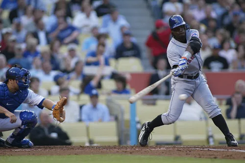
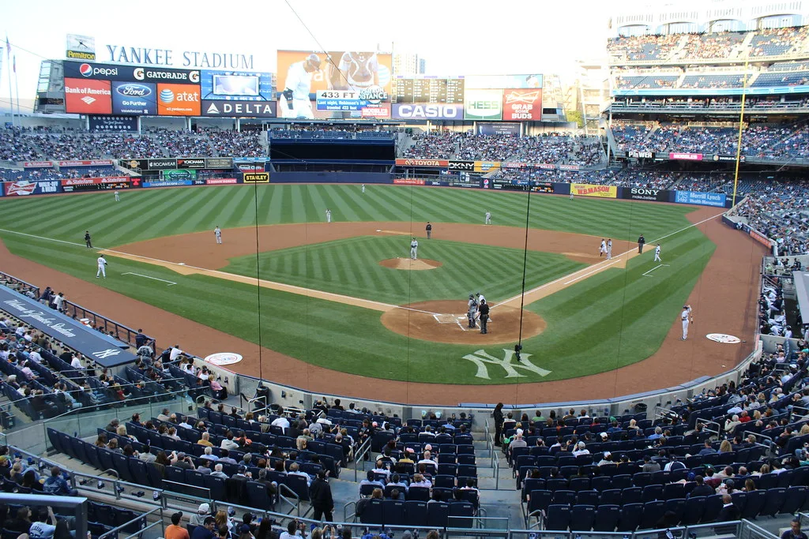

한국 야구, 일본 꺾고 아시안게임 5연패…20년 만의 결승 설욕
한국 야구 국가대표팀이 일본을 꺾고 아시안게임 5회 연속 금메달을 목에 걸었다. 대표팀은 지난 27일 일본 아이치현 도요하시 시민구장에서 열린 2026 아이치·나고야 아시안게임 야구 결승전에서 일본을 3대 1로 제압했다. 이로써 한국 야구는 2010년 광저우 대회부터 2014년 인천, 2018년 자카르타·팔렘방, 2022년 항저우에 이어 이번 대회까지 다섯 번의 아시안게임에서 내리 우승을 차지하는 대기록을 세웠다. 현지에서 경기를 지켜본 교민들과 원정 응원단도 경기 종료 순간 일제히 환호성을 터뜨렸다.
이번 결승전은 앞서 슈퍼라운드 1차전에서 일본에 0대 5로 완패했던 대표팀이 절치부심 끝에 설욕에 성공했다는 점에서 더욱 의미가 크다. 한국이 아시안게임 야구에서 일본에 패한 것은 2006년 도하 대회 예선 이후 20년 만이었던 터라, 대표팀 안팎에서는 결승 재대결에 대한 부담이 적지 않았던 것으로 전해졌다. 류지현 감독을 비롯한 코칭스태프는 슈퍼라운드 패배 이후 수비 위치와 투수 운용을 전면적으로 재점검한 것으로 알려졌다.

결과적으로 대표팀은 슈퍼라운드의 아쉬움을 결승 무대에서 완전히 씻어냈다. 이날 선발 등판한 곽빈은 6와 3분의 1이닝 동안 111개의 공을 던지며 단 1점만을 내주는 호투를 펼쳐 승리의 발판을 놓았다. 다소 흔들리는 순간에도 큰 실점 없이 이닝을 끌고 간 점이 승부의 분수령이 됐다는 평가가 나온다. 위기 때마다 침착하게 공을 던진 그의 투구 내용을 두고 현지 해설진도 여러 차례 감탄을 나타냈다.
타선에서는 8회 김도영이 내야 안타로 출루한 뒤 문보경의 적시타로 결승점이 완성됐다. 팽팽하던 경기 흐름을 뒤집은 이 한 방으로 더그아웃 분위기가 크게 달아올랐고, 이후 대표팀은 안정된 수비로 남은 이닝을 마무리하며 금메달을 확정했다. 마운드와 타선이 조화를 이루며 만들어낸 결승점이라는 평가가 뒤따랐다. 마지막 이닝을 지켜낸 마무리 투수는 실점 없이 경기를 매듭지으며 값진 승리를 완성했다.
이번 우승으로 한국 야구는 국제대회에서 다시 한번 저력을 입증했다는 평가를 받는다. 특히 슈퍼라운드에서의 패배를 딛고 결승에서 완전히 다른 경기력을 보여줬다는 점에서, 대표팀의 경기 운영 능력과 정신력에 대한 긍정적 평가가 이어지고 있다. 해설진들은 이번 대회를 통해 대표팀의 뎁스가 한층 두꺼워졌다는 점도 함께 짚었다.

야구계에서는 젊은 선수들이 대거 포함된 이번 대표팀이 세대교체를 성공적으로 이뤄내고 있다는 분석도 나온다. 곽빈을 비롯한 젊은 투수진과 김도영, 문보경 등 젊은 타자들이 국제무대에서 핵심 역할을 해냈다는 점이 특히 주목받고 있다. 병역 혜택이 걸린 대회 특성상 이들의 활약은 향후 국가대표팀 운영에도 긍정적인 신호로 받아들여진다.
대표팀의 5연패 소식은 추석 연휴 마지막 날 전해지며 온 국민에게 반가운 소식을 안겼다. 선수단은 귀국 후 곧바로 소속팀으로 복귀해 다가오는 정규시즌 후반기 일정을 준비할 예정이며, 이번 대회를 계기로 검증된 선수들이 앞으로 프로 무대와 국가대표팀에서 어떤 활약을 이어갈지에도 관심이 쏠린다. 팬들 사이에서는 이번 우승이 침체됐던 야구 인기를 다시 끌어올리는 계기가 될 것이라는 기대도 나온다.